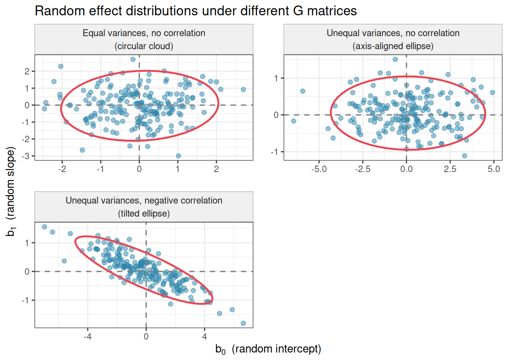

Mathematics is not about numbers, equations, computations, or algorithms: it is about understanding.
— Terence Tao
A.1 Why the F Test Needs Normal Residuals
The connection between normal residuals and the F distribution is not an arbitrary convention — it follows from a precise chain of mathematical results. Here we trace that chain step by step.
A.1.1 Step 1: Normal Residuals Produce Chi-Squared Sums of Squares
If the residuals \(\varepsilon_{ij} \sim \mathcal{N}(0, \sigma^2)\) independently, then any sum of squared standard normal variables follows a chi-squared distribution. Specifically, if \(Z \sim \mathcal{N}(0, 1)\), then \(Z^2 \sim \chi^2_1\), and the sum of \(\nu\) independent squared standard normals follows \(\chi^2_\nu\).
The within-group sum of squares can be written as:
because each standardised residual \((y_{ij} - \bar{y}_j)/\sigma\) is a standard normal variable (under the normality assumption), and there are \(N - k\) independent squared terms after accounting for the \(k\) estimated group means.
Similarly, under \(H_0\), the among-group sum of squares satisfies:
A.1.2 Step 2: Independence of the Two Sums of Squares
For the ratio of two chi-squared variables to follow an F distribution, the two variables must be independent. This independence — \(SS_{\text{among}}\) and \(SS_{\text{within}}\) are independent — is guaranteed by Cochran’s theorem, which states that for normally distributed data, sums of squares arising from an orthogonal decomposition of the total sum of squares are independent of one another. This is a non-trivial result that relies critically on the normality of the residuals.
Without normality, Cochran’s theorem does not apply, and \(SS_{\text{among}}\) and \(SS_{\text{within}}\) are not guaranteed to be independent.
A.1.3 Step 3: The Ratio of Two Chi-Squared Variables Is F-Distributed
By definition, if \(U \sim \chi^2_{d_1}\) and \(V \sim \chi^2_{d_2}\) are independent, then:
This is the F distribution used to compute the p-value. The entire derivation rests on two steps that both require normality:
The sums of squares are chi-squared distributed only if the residuals are normal.
The two sums of squares are independent only if the residuals are normal (via Cochran’s theorem).
A.1.4 Why the Test Remains Approximately Valid Without Normality
The central limit theorem provides some protection. As group sample sizes \(n_j\) grow, the group means \(\bar{y}_j\) converge to normality regardless of the distribution of the residuals. This means the among-group sum of squares, which is computed from group means, becomes approximately chi-squared distributed even when individual residuals are not normal. The approximation improves with sample size, which is why the F test is robust to non-normality in large samples — but it is an approximation, not an exact result, and it degrades with small samples and severe departures from normality.
A.2 From Equations to Matrices: Understanding the Linear Predictor
If you have encountered the expression \(\eta_i = \mathbf{x}_i^T \boldsymbol{\beta}\) and found the bold symbols and superscript \(T\) unfamiliar, this section is for you. We will build up to this notation step by step, starting from the simple regression equation you already know.
A.2.1 Starting Point: A Single Observation
Consider the simplest linear model: predicting plant height \(y\) from a single predictor, say the amount of fertiliser applied \(x\). For one plant \(i\), the model is:
\[y_i = \beta_0 + \beta_1 x_i + \varepsilon_i\]
The linear predictor\(\eta_i\) is the systematic part — everything except the error:
\[\eta_i = \beta_0 + \beta_1 x_i\]
This is straightforward. Now suppose you have two predictors: the amount of fertiliser \(x_{i1}\) and the amount of water \(x_{i2}\). The linear predictor becomes:
Writing this out for every observation in a dataset of 100 plants would require 100 such equations. This is where matrix notation becomes indispensable — it lets us write all 100 equations at once in a single compact expression.
A.2.2 Step 1: Collect the Predictors Into a Vector
For observation \(i\), we collect all its predictor values — including a 1 for the intercept — into a single column vector \(\mathbf{x}_i\):
Multiplying a row vector by a column vector of the same length gives a single number — the dot product or inner product. Each element of the row is multiplied by the corresponding element of the column, and the results are summed:
This is exactly the linear predictor we started with. The compact notation \(\eta_i = \mathbf{x}_i^T \boldsymbol{\beta}\) is therefore just a concise way of writing a sum of products — nothing more.
A.2.5 Step 4: All Observations at Once
Now suppose we have \(n = 4\) plants. Rather than writing four separate equations, we stack all the predictor vectors as rows into a single matrix \(\mathbf{X}\), called the design matrix:
Each row is one observation; each column is one predictor (plus the leading column of ones for the intercept). Multiplying \(\mathbf{X}\) by the coefficient vector \(\boldsymbol{\beta}\) produces a vector of linear predictors, one per observation:
where \(\mathbf{y}\) is the vector of responses, \(\mathbf{X}\) is the design matrix, \(\boldsymbol{\beta}\) is the vector of coefficients, and \(\boldsymbol{\varepsilon}\) is the vector of residuals. This single line replaces \(n\) separate equations.
A.2.6 A Concrete Example
Suppose we have 4 plants: two control and two nitrogen-treated, with fertiliser amounts 0, 0, 10, and 15 grams. The response is height in centimetres.
If the fitted model gives \(\hat{\beta}_0 = 20\) and \(\hat{\beta}_1 =
1.2\), then \(\hat{\eta}_3 = 20 + 10 \times 1.2 = 32\) cm — the model’s prediction for plant 3. The residual is \(y_3 - \hat{\eta}_3 = 28 -
32 = -4\) cm.
A.2.7 Why This Matters for GLMs and Mixed Models
In a standard linear model, the linear predictor \(\eta_i\) is directly the expected response: \(\mu_i = \eta_i\). In a GLM, a link function \(g(\cdot)\) separates them: \(g(\mu_i) = \eta_i\). The matrix notation \(\eta_i = \mathbf{x}_i^T \boldsymbol{\beta}\) remains exactly the same — only what happens to \(\eta_i\) afterwards changes.
In a linear mixed model, random effects are added to the linear predictor:
where \(\mathbf{z}_i\) is a vector of random effect indicators for observation \(i\) (analogous to \(\mathbf{x}_i\) for fixed effects) and \(\mathbf{b}\) is the vector of random effect values. Again, the compact notation is simply a sum of products written efficiently.
Once you recognise \(\mathbf{x}_i^T \boldsymbol{\beta}\) as “multiply each predictor value by its coefficient and add them up”, the notation loses its mystery. Every model in this book — one-way ANOVA, two-way factorial, repeated measures, mixed model, GLMM, is built on this same simple operation.
A.3 The Random Effects Distribution: \(\mathbf{b}_j \sim \mathcal{N}(\mathbf{0}, \mathbf{G})\)
The notation \(\mathbf{b}_j \sim \mathcal{N}(\mathbf{0}, \mathbf{G})\) appears in every mixed model equation in this book. Like the linear predictor notation of the previous section, it compresses a rich mathematical idea into a compact expression. This section unpacks it layer by layer.
A.3.1 Starting Point: A Single Random Effect
In the simplest mixed model — a random intercept model — each group \(j\) has its own intercept deviation \(b_j\). We assume these deviations are drawn from a normal distribution centred on zero:
\[b_j \sim \mathcal{N}(0, \sigma^2_b)\]
This says three things:
The random effects are normally distributed — their histogram across groups would look like a bell curve.
Their mean is zero — on average, groups do not deviate from the population mean. Some groups are above average and some below, but they balance out.
Their variance is \(\sigma^2_b\) — this single number controls how spread out the group-level deviations are. A large \(\sigma^2_b\) means groups differ substantially from each other; a small \(\sigma^2_b\) means they are all similar.
This is a scalar (single-number) normal distribution. The bold notation \(\mathcal{N}(\mathbf{0}, \mathbf{G})\) is its generalisation to the case where each group has multiple random effects — for example, both a random intercept and a random slope.
A.3.2 Step 1: Multiple Random Effects Per Group
Suppose each group \(j\) has two random effects: a random intercept \(b_{0j}\) (how much the group’s baseline differs from average) and a random slope \(b_{1j}\) (how much the group’s response to a predictor differs from average). We collect these into a vector:
Now we need a distribution for this two-dimensional vector. The natural generalisation of the univariate normal is the multivariate normal distribution.
A.3.3 Step 2: The Mean Vector \(\mathbf{0}\)
The bold zero \(\mathbf{0}\) is a vector of zeros — one zero for each random effect:
This says that both the random intercept and the random slope have mean zero across groups. On average, no group deviates from the population intercept or the population slope. Individual groups deviate, but their deviations are centred on zero.
A.3.4 Step 3: The Covariance Matrix \(\mathbf{G}\)
The scalar variance \(\sigma^2_b\) generalises to a covariance matrix\(\mathbf{G}\) — also called the variance-covariance matrix of the random effects. For a model with a random intercept and a random slope, \(\mathbf{G}\) is a \(2 \times 2\) matrix:
\(\sigma^2_0\): the variance of the random intercepts across groups. How much do groups differ in their baseline level?
\(\sigma^2_1\): the variance of the random slopes across groups. How much do groups differ in their response to the predictor?
\(\sigma_{01}\): the covariance between random intercepts and random slopes. Do groups with a higher baseline also tend to have a steeper (or shallower) slope?
The diagonal of \(\mathbf{G}\) contains the variances; the off-diagonal contains the covariances. Because the matrix is symmetric (\(\sigma_{01}\) appears in both off-diagonal positions), we only need three numbers to fully specify it for a two-random-effect model.
A.3.5 Step 4: From Covariance to Correlation
The covariance \(\sigma_{01}\) can be difficult to interpret directly because its magnitude depends on the scales of \(b_{0j}\) and \(b_{1j}\). The standardised version is the correlation:
where \(\sigma_0 = \sqrt{\sigma^2_0}\) and \(\sigma_1 = \sqrt{\sigma^2_1}\) are the standard deviations. The correlation \(\rho_{01}\) always lies between \(-1\) and \(1\) and is directly interpretable:
\(\rho_{01} > 0\): groups that start higher also tend to improve more rapidly (or decline less steeply) — a positive association between intercept and slope.
\(\rho_{01} < 0\): groups that start higher tend to improve less rapidly — a negative association, suggesting regression to the mean.
\(\rho_{01} = 0\): the baseline level of a group tells you nothing about the slope — intercepts and slopes vary independently.
In lme4 and lmerTest output, both the standard deviations and the correlation are reported in the random effects summary:
Random effects:
Groups Name Variance Std.Dev. Corr
subject (Intercept) 4.84 2.20
time 0.16 0.40 -0.32
Residual 1.96 1.40
Here \(\hat{\sigma}_0 = 2.20\), \(\hat{\sigma}_1 = 0.40\), and \(\hat{\rho}_{01} = -0.32\) — subjects who start with higher values tend to improve slightly less rapidly, a mild negative intercept-slope correlation.
A.3.6 Step 5: The Full Statement
Putting it all together, \(\mathbf{b}_j \sim \mathcal{N}(\mathbf{0},
\mathbf{G})\) states:
The vector of random effects for group \(j\) is drawn from a multivariate normal distribution with mean vector \(\mathbf{0}\) (all random effects average to zero across groups) and covariance matrix \(\mathbf{G}\) (whose diagonal entries are the variances of each random effect and whose off-diagonal entries are the covariances between pairs of random effects).
For a random intercept-only model, this reduces to the familiar scalar statement \(b_j \sim \mathcal{N}(0, \sigma^2_b)\), since \(\mathbf{G}\) collapses to a \(1 \times 1\) matrix containing only \(\sigma^2_b\).
A.3.7 A Geometric Intuition
The multivariate normal distribution \(\mathcal{N}(\mathbf{0},
\mathbf{G})\) can be visualised as a cloud of points centred on the origin in two-dimensional space (for two random effects). The shape of the cloud is determined by \(\mathbf{G}\):
If \(\sigma^2_0 = \sigma^2_1\) and \(\sigma_{01} = 0\), the cloud is a perfect circle — intercepts and slopes vary equally and independently.
If \(\sigma^2_0 \gg \sigma^2_1\), the cloud is an ellipse stretched along the intercept axis — groups vary more in their baselines than in their slopes.
If \(\sigma_{01} \neq 0\), the ellipse is tilted — there is a linear association between the intercept and slope deviations across groups.
#| cache: true#| fig-cap: "Simulated random effect pairs (intercepts and slopes) drawn from three different bivariate normal distributions. Left: independent random effects with equal variances — circular cloud. Centre: unequal variances, no correlation — ellipse aligned with the axes. Right: unequal variances with negative correlation — tilted ellipse. Each point represents one group's random intercept and slope deviation."#| label: fig-re-distribution-plotlibrary(ggplot2)library(MASS)set.seed(42)n_groups<-200scenarios<-list(list( G =matrix(c(1, 0, 0, 1), 2), label ="Equal variances, no correlation\n(circular cloud)"),list( G =matrix(c(4, 0, 0, 0.25), 2), label ="Unequal variances, no correlation\n(axis-aligned ellipse)"),list( G =matrix(c(4, -0.8, -0.8, 0.25), 2), label ="Unequal variances, negative correlation\n(tilted ellipse)"))re_df<-do.call(rbind, lapply(scenarios, function(s){re<-mvrnorm(n_groups, mu =c(0, 0), Sigma =s$G)data.frame( intercept =re[, 1], slope =re[, 2], scenario =s$label)}))re_df$scenario<-factor(re_df$scenario, levels =sapply(scenarios, `[[`, "label"))ggplot(re_df, aes(x =intercept, y =slope))+geom_point(colour ="#2E86AB", alpha =0.5, size =1.8)+geom_hline(yintercept =0, linetype ="dashed", colour ="grey50", linewidth =0.6)+geom_vline(xintercept =0, linetype ="dashed", colour ="grey50", linewidth =0.6)+stat_ellipse(colour ="#E84855", linewidth =0.9, level =0.95)+facet_wrap(~scenario, ncol =2, scales ="free")+labs( title ="Random effect distributions under different G matrices", x =expression(b[0]~~"(random intercept)"), y =expression(b[1]~~"(random slope)"))+theme_bw()+theme( strip.text =element_text(size =9, lineheight =1.2), strip.background =element_rect(fill ="#f0f0f0", colour ="grey70"), panel.spacing =unit(1.2, "lines"))

A.3.8 What \(\mathbf{G}\) Is Not
Two common misconceptions are worth correcting explicitly.
\(\mathbf{G}\) is not known in advance. It is estimated from the data, along with \(\boldsymbol{\beta}\) and \(\sigma^2_\varepsilon\). The estimated \(\hat{\mathbf{G}}\) appears in the random effects section of the model summary. With few groups, the estimates will be uncertain — especially the off-diagonal covariance, which requires sufficient spread in both dimensions to estimate reliably.
\(\mathbf{G}\) is not the same as the residual covariance matrix.\(\mathbf{G}\) describes the distribution of random effects across groups — between-group variation. The residual variance \(\sigma^2_\varepsilon\) describes the variation within groups after accounting for the fixed and random effects. These are separate variance components at different levels of the hierarchy, as discussed in Section 9.2.